Corazón de León
La última maga 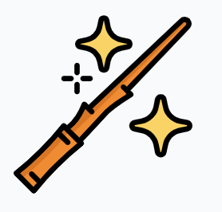
Creo que el primer momento nais fue con el huerto de mi mamá, ¿te acuerdas? Cuando bauticé a un girasol en tu nombre, ahí va la foto.
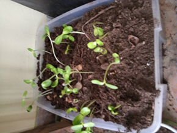
lo que le pasó después no importa, ¿verdad? ¡La intención es lo que
cuenta! 😬 Hemos compartido historias, amanecidas hablando de uf demasiados
temas, por ejemplo, una de ellas fue cuando compartimos cosas de
chiquitos, como esta o esta, 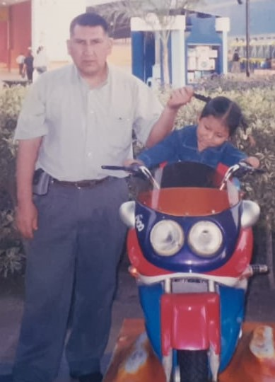
también es necesario hablar de Luna y
Akira, dos perras nais, que aunque Luna te saque canas y te den ganas de
mandarla a la mismísima, te quiere, ¡pero no tanto como yo! Ya tu sa 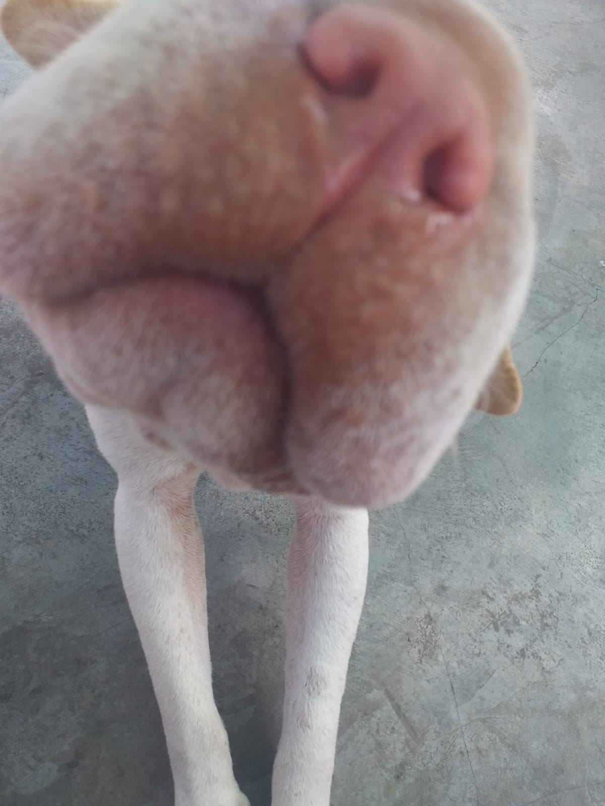
Luego está Akira, bueno, ella ya te conoce y se presta también para las
mejores fotos, por ejemplo cuando te extraño y ya quiero que vengas,
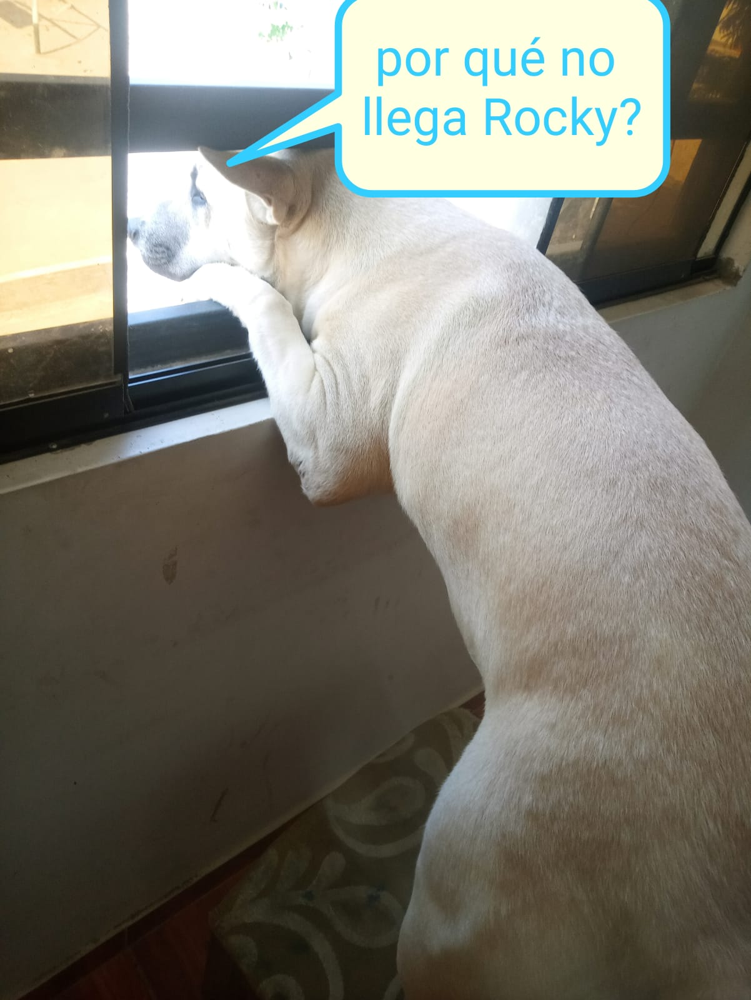
o
posando bien sexy para la cámara, ¿te veré algún día así?😁
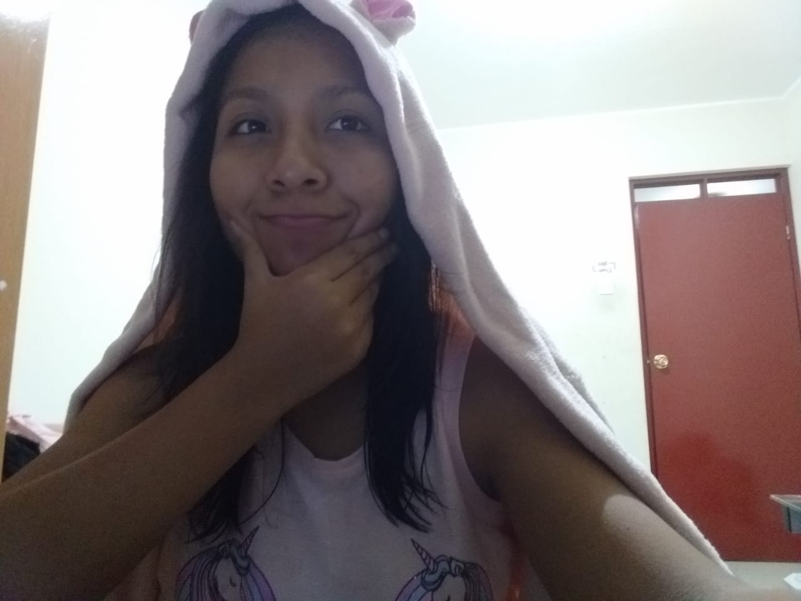
también está el sticker de "In dubio perreo" 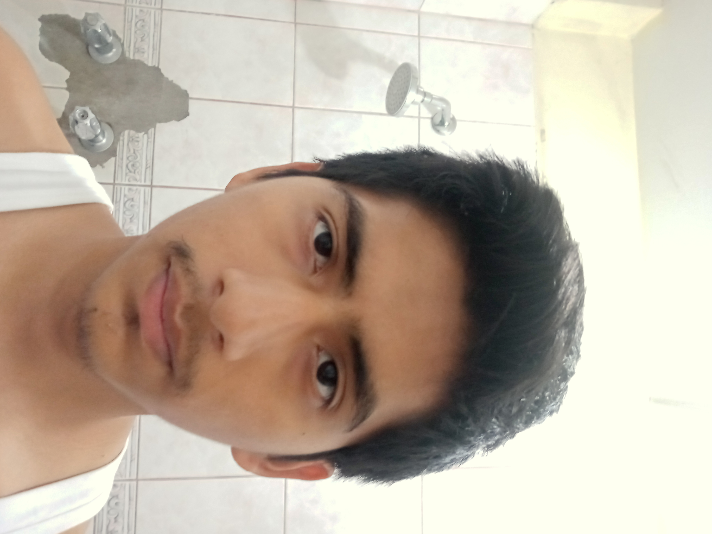
o quizás, una más sexy
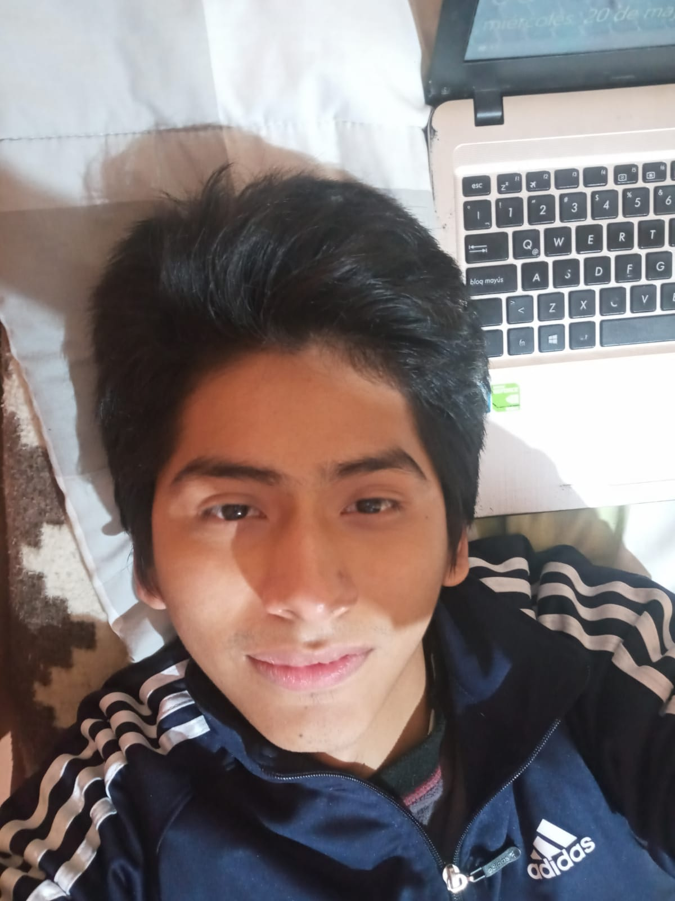
¿verdad que tengo potencial? No
sé que ves en esta foto Xd pero debo admitir que me veo bien. Y para mí,
la mejor de todas, debe ser por esa sonrisa hermosa 😍, 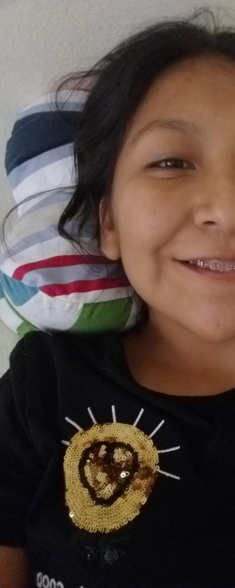
¡no podemos
olvidarnos de los juegos! ¿Cuántos hemos jugado? Clash royale, Ludo,
Mobile Legends, preguntados,… solo falta jugar un dota y ya estás,
serías una pericote completa, uno del clan🤙, y ¿cómo olvidar ese
día?, cuando ... ejem ejem ¿te gané? ¡Sí debes acordarte! A las pruebas me
remito, 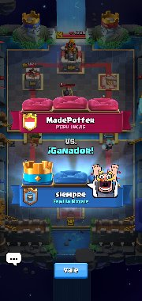
el día del berrinche xD, también tengo que mencionar a la
primera carta, fue realmente hermosa, y nada que decir sobre los cupones, ¡otra cosita!También he cambiado algunos hábitos gracias a ti, no es necesario decirlo pero ya sabes cuál es.
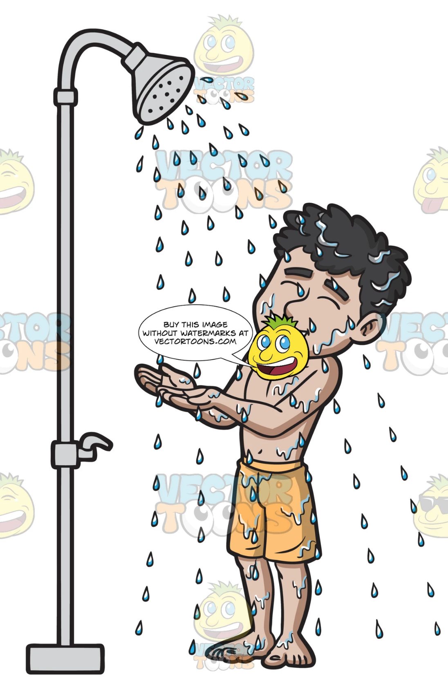
¡No podemos olvidarnos del sabadín! A las pruebas me remito...solo a esto puedo llegar xD, tú sabes, protección
al menor. 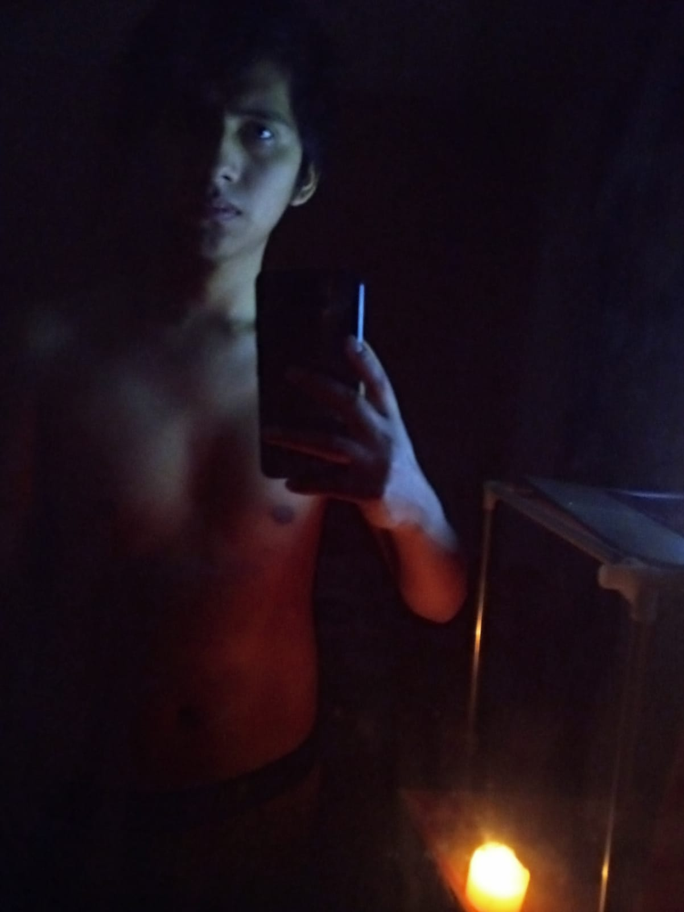
Obviamente tiene que estar aquí el día de la verdad, el día que fuiste al sillón rojo y me
contaste tu secreto 🥶, no me lo esperaba en serio, pero tampoco me asusté y mucho menos me lo tomé a mal,
estuvo picante y en cierto punto me gustó, ¿te imaginas?, la versión
gangster de Made🔫🧨💣🔪, otra cosita, no tengo fotos de eso pero me imagino que fue así... 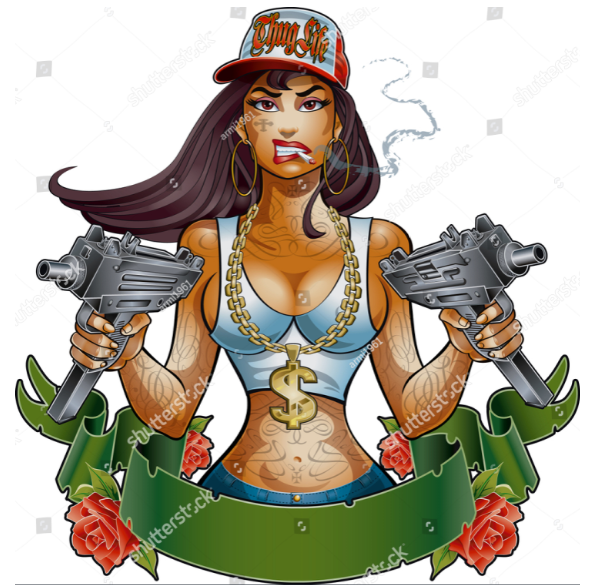
Tenemos casi dos meses de enamorados y creeme que ya quiero que llegue el día en el que por fin nuestras
manos se juntarán🙏, tu mejila con mi mejilla😊, acariciar tus lindos
labios, besar tu sonrisa😙, cargarte 🐘, apapacharte, decirte lo mucho que te
quiero ❤ ¡me vas a querer más que nunca!, 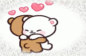
, me encantas cuando me empiezas a llenar de
memes y me alegras el día 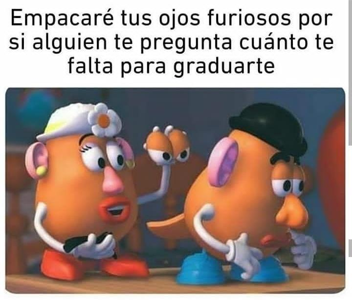
, nunca
dejaré de dar las gracias a la vida por haber conocido a tan maravillosa
persona, mi pedacito de cielo, mi chocolate princesa 🍫, mi amorsh y mi
corazón, quiero quedarme a tu lado y quiero
que sepas que me esforzaré para que sea así, Quiero conocer el mundo contigo
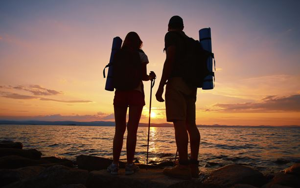
, hacer mil y un travesuras
juntos, engordar también 😅 , ¿quizás descubrimos un nuevo continente? ¿quizás encontremos la
cura a todos los males? ¿quizás encontremos la respuesta al bing bang? o por fín encontremos la respuesta a quién vino primero
¿el huevo o la gallina?
Para terminar, sé que me estoy olvidando de muchas cosas, por ejemplo, las llamadas, las charadas de películas, los juegos que nunca pudimos pasar más de la c😅 , las cosas que he ido aprendiendo de ti como que sabes como cancha de artes marciales, que te encanta el chaufa, la palta, yo, etc, etc, pero se me acaba la música para decirte lo último 😅😅.
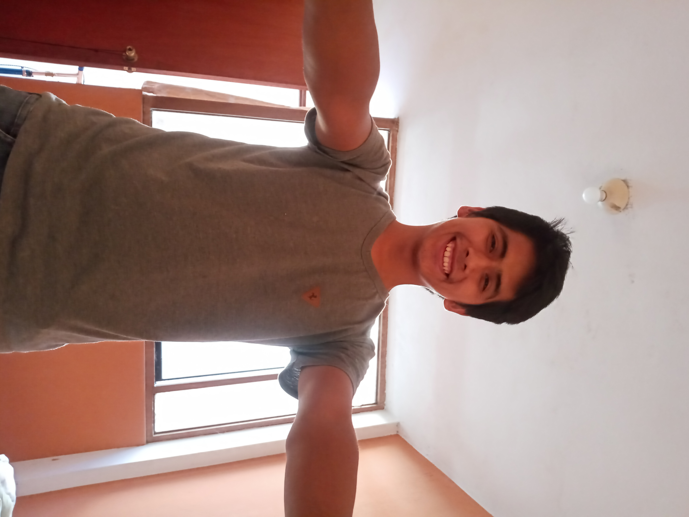
Te quiero!